Contoh Penggunaan Fungsi Lookup & Reference
Vlookup | Tarif Pajak | Index and Match | Pencarian dua arah | Offset | Pencarian Case-Insensitive | Left Lookup | Temukan Nilai Maksimum | Indirect | Pencarian dua kolom | Closest Match | Bandingkan Dua Kolom | Xlookup
Vlookup
Pencocokan Tepat | Perkiraan Kecocokan | Vlookup Pencarian ke Kanan | Kecocokan Pertama | Vlookup Pencarian Huruf Besar/Kecil | Beberapa Kriteria | #N/A Error | Beberapa Tabel Pencarian | Index dan Match | Xlookup
Fungsi VLOOKUP adalah salah satu fungsi yang paling populer di Excel . Halaman ini berisi banyak contoh VLOOKUP yang mudah diikuti.
Benar-benar cocok
Sebagian besar waktu Anda mencari kecocokan yang tepat saat Anda menggunakan fungsi VLOOKUP di Excel. Mari kita lihat argumen dari fungsi VLOOKUP.
1. Fungsi VLOOKUP di bawah ini mencari nilai 53 (argumen pertama) di kolom paling kiri tabel merah (argumen kedua).
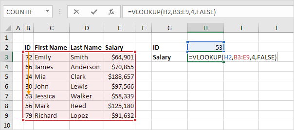
2. Nilai 4 (argumen ketiga) memberitahu fungsi VLOOKUP untuk mengembalikan nilai pada baris yang sama dari kolom keempat tabel merah.

Catatan: Boolean FALSE (argumen keempat) memberi tahu fungsi VLOOKUP untuk mengembalikan kecocokan yang sama persis. Jika fungsi VLOOKUP tidak dapat menemukan nilai 53 di kolom pertama, itu akan mengembalikan kesalahan #N/A .
3. Ini contoh lain. Alih-alih mengembalikan gaji, fungsi VLOOKUP di bawah ini mengembalikan nama belakang (argumen ketiga diatur ke 3) dari ID 79.
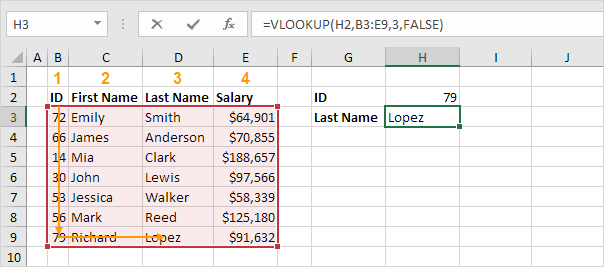
Perkiraan Pertandingan
Mari kita lihat contoh fungsi VLOOKUP dalam mode pencocokan perkiraan (argumen keempat disetel ke TRUE).
1. Fungsi VLOOKUP di bawah ini mencari nilai 85 (argumen pertama) di kolom paling kiri dari tabel merah (argumen kedua). Hanya ada satu masalah. Tidak ada nilai 85 di kolom pertama.

2. Untungnya, Boolean TRUE (argumen keempat) memberi tahu fungsi VLOOKUP untuk mengembalikan perkiraan kecocokan. Jika fungsi VLOOKUP tidak dapat menemukan nilai 85 di kolom pertama, itu akan mengembalikan nilai terbesar yang lebih kecil dari 85. Dalam contoh ini, ini akan menjadi nilai 80.
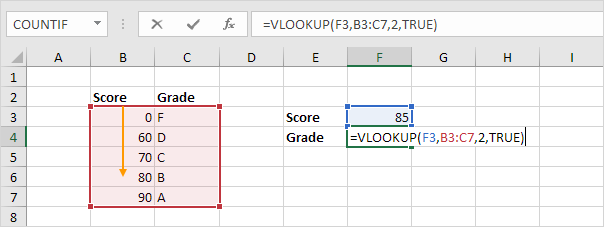
3. Nilai 2 (argumen ketiga) memberitahu fungsi VLOOKUP untuk mengembalikan nilai pada baris yang sama dari kolom kedua tabel merah.
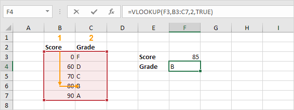
Catatan: selalu urutkan kolom paling kiri dari tabel merah dalam urutan menaik jika Anda menggunakan fungsi VLOOKUP dalam mode pencocokan perkiraan (argumen keempat disetel ke TRUE).
Vlookup Pencarian ke Kanan
Fungsi VLOOKUP selalu mencari nilai di kolom paling kiri dari tabel dan mengembalikan nilai yang sesuai dari kolom ke kanan .
1. Misalnya, fungsi VLOOKUP di bawah ini mencari nama depan dan mengembalikan nama belakang.

2. Jika Anda mengubah nomor indeks kolom (argumen ketiga) menjadi 3, fungsi VLOOKUP akan mencari nama depan dan mengembalikan gaji.

Catatan: dalam contoh ini, fungsi VLOOKUP tidak dapat mencari nama depan dan mengembalikan ID. Fungsi VLOOKUP hanya melihat ke kanan. Jangan khawatir, Anda dapat menggunakan INDEX dan MATCH di Excel untuk melakukan pencarian kiri .
Pertandingan Pertama
Jika kolom paling kiri dari tabel berisi duplikat, fungsi VLOOKUP cocok dengan instance pertama. Sebagai contoh, lihatlah fungsi VLOOKUP di bawah ini.
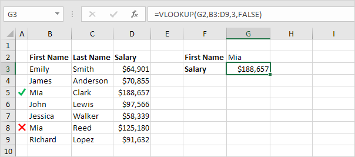
Penjelasan: fungsi VLOOKUP mengembalikan gaji Mia Clark, bukan Mia Reed.
Vlookup tidak peka huruf besar-kecil
Fungsi VLOOKUP di Excel melakukan pencarian peka huruf besar/kecil. Misalnya, fungsi VLOOKUP di bawah ini mencari MIA (sel G2) di kolom paling kiri tabel.
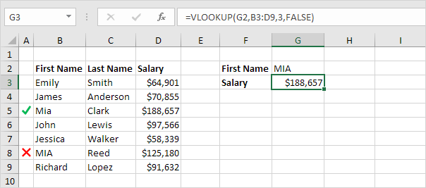
Penjelasan: Fungsi VLOOKUP bersifat case-insensitive sehingga mencari MIA atau Mia atau mia atau miA, dll. Akibatnya, fungsi VLOOKUP mengembalikan gaji Mia Clark (contoh pertama). Gunakan INDEX, MATCH, dan EXACT di Excel untuk melakukan pencarian peka huruf besar/kecil .
Beberapa Kriteria
Apakah Anda ingin mencari nilai berdasarkan beberapa kriteria? Gunakan INDEX dan MATCH di Excel untuk melakukan pencarian dua kolom .
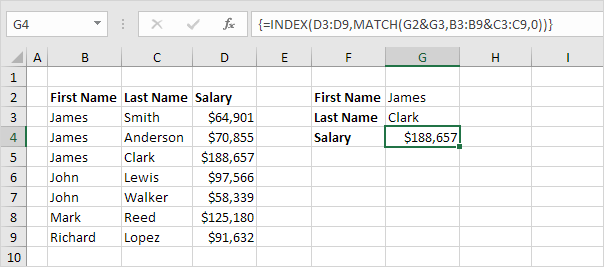
Catatan: rumus array di atas mencari gaji James Clark, bukan James Smith, bukan James Anderson.
#T/A kesalahan
Jika fungsi VLOOKUP tidak dapat menemukan kecocokan, ia mengembalikan kesalahan #N/A.
1. Misalnya, fungsi VLOOKUP di bawah ini tidak dapat menemukan nilai 28 di kolom paling kiri.
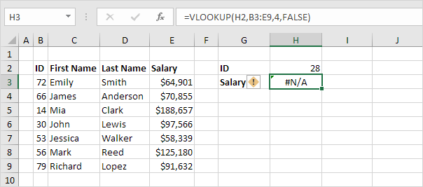
2. Jika mau, Anda dapat menggunakan fungsi IFNA untuk mengganti kesalahan #N/A dengan pesan ramah.
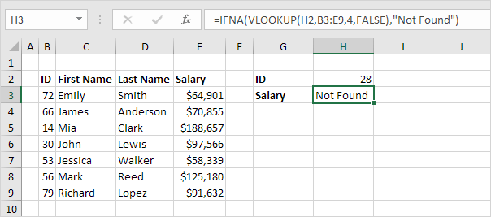
Catatan: fungsi IFNA diperkenalkan di Excel 2013. Jika Anda menggunakan Excel 2010 atau Excel 2007, cukup ganti IFNA dengan IFERROR. Ingat, fungsi IFERROR juga menangkap kesalahan lain. Misalnya, #NAME? kesalahan jika Anda tidak sengaja salah mengeja kata VLOOKUP.
Beberapa Tabel Pencarian
Saat menggunakan fungsi VLOOKUP di Excel, Anda dapat memiliki beberapa tabel pencarian. Anda dapat menggunakan fungsi IF untuk memeriksa apakah suatu kondisi terpenuhi, dan mengembalikan satu tabel pencarian jika TRUE dan tabel pencarian lainnya jika FALSE.
1. Buat dua rentang bernama : Tabel1 dan Tabel2.

2. Pilih sel E4 dan masukkan fungsi VLOOKUP yang ditunjukkan di bawah ini.

Penjelasan: bonus tergantung pada pasar (Inggris atau USA) dan jumlah penjualan. Argumen kedua dari fungsi VLOOKUP berhasil. Jika Inggris, fungsi VLOOKUP menggunakan Tabel1, jika AS, fungsi VLOOKUP menggunakan Tabel2. Setel argumen keempat fungsi VLOOKUP ke TRUE untuk mengembalikan perkiraan kecocokan.
3. Tekan Enter.
4. Pilih sel E4, klik di sudut kanan bawah sel E4 dan seret ke bawah ke sel E10.
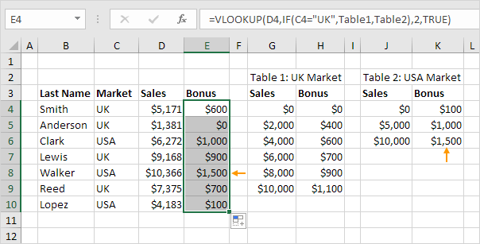
Catatan: misalnya, Walker menerima bonus $1.500. Karena kami menggunakan rentang bernama, kami dapat dengan mudah menyalin fungsi VLOOKUP ini ke sel lain tanpa mengkhawatirkan referensi sel.
Indeks dan Pertandingan
Alih-alih menggunakan VLOOKUP, gunakan INDEX dan MATCH . Untuk melakukan pencarian lanjutan, Anda memerlukan INDEX dan MATCH. Mungkin ini satu langkah terlalu jauh untuk Anda pada tahap ini, tetapi ini menunjukkan kepada Anda salah satu dari banyak formula hebat lainnya yang ditawarkan Excel.
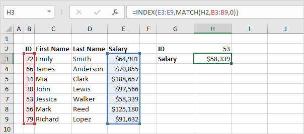
Xlookup
Jika Anda memiliki Excel 365, gunakan XLOOKUP, bukan VLOOKUP. Fungsi XLOOKUP lebih mudah digunakan dan memiliki beberapa keuntungan tambahan.

Tarif Pajak (Tax Rates)
Contoh ini mengajarkan Anda bagaimana menghitung pajak atas penghasilan menggunakan fungsi VLOOKUP di Excel . Tarif pajak berikut berlaku untuk individu yang merupakan penduduk Australia.
| Penghasilan kena pajak | Pajak atas penghasilan ini |
|---|---|
| 0 - $18,200 | Nol |
| $18,201 - $37,000 | 19c untuk setiap $1 lebih dari $18.200 |
| $37,001 - $87,000 | $3,572 ditambah 32,5c untuk setiap $1 di atas $37.000 |
| $87,001 - $180,000 | $19.822 ditambah 37c untuk setiap $1 lebih dari $87.000 |
| $180,001 ke atas | $54.232 ditambah 45c untuk setiap $1 di atas $180.000 |
Contoh: jika penghasilan 39000, pajak sama dengan 3572 + 0,325 * (39000 - 37000) = 3572 + 650 = $4222
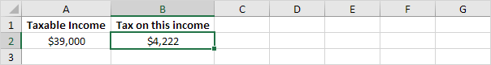
Untuk menghitung pajak penghasilan secara otomatis, lakukan langkah-langkah berikut.
1. Pada lembar kedua, buat rentang bernama Tarif.
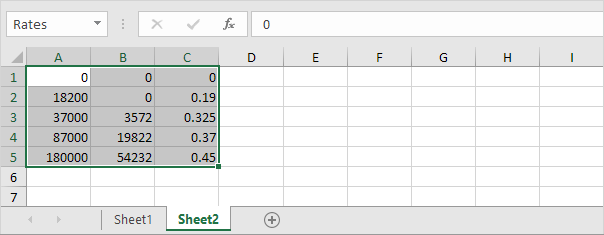
2. Saat Anda menyetel argumen keempat dari fungsi VLOOKUP ke TRUE, fungsi VLOOKUP mengembalikan kecocokan yang sama persis atau jika tidak ditemukan, ia mengembalikan nilai terbesar yang lebih kecil dari lookup_value (A2). Itulah yang kami inginkan!
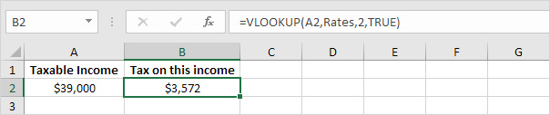
Penjelasan: Excel tidak dapat menemukan 39000 di kolom pertama Tarif. Namun, ia dapat menemukan 37000 (nilai terbesar lebih kecil dari 39000). Akibatnya, ia mengembalikan 3572 (col_index_num, argumen ketiga, disetel ke 2).
3. Sekarang, yang tersisa adalah sisa persamaan, + 0,325 * (39000 - 37000). Ini mudah. Kita dapat mengembalikan 0,325 dengan menyetel col_index_num ke 3 dan mengembalikan 37000 dengan menyetel col_index_num ke 1. Rumus lengkap di bawah ini berhasil.

Catatan: saat Anda menyetel argumen keempat fungsi VLOOKUP ke TRUE, kolom pertama tabel harus diurutkan dalam urutan menaik.
Index and Match
Pertandingan | Indeks | Indeks dan Pertandingan | Pencarian Dua Arah | Pencarian peka huruf besar/kecil | Pencarian Kiri | Pencarian dua kolom | Pertandingan Terdekat
Gunakan INDEX dan MATCH di Excel dan buat atasan Anda terkesan. Alih-alih menggunakan VLOOKUP , gunakan INDEX dan MATCH. Untuk melakukan pencarian lanjutan, Anda memerlukan INDEX dan MATCH.
Cocok
Fungsi MATCH mengembalikan posisi nilai dalam rentang tertentu. Misalnya, fungsi MATCH di bawah ini mencari nilai 53 dalam rentang B3:B9.
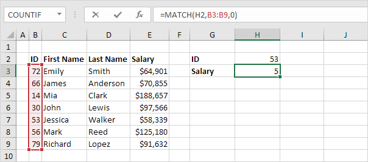
Penjelasan: 53 (argumen pertama) ditemukan pada posisi 5 dalam rentang B3:B9 (argumen kedua). Dalam contoh ini, kami menggunakan fungsi MATCH untuk mengembalikan kecocokan persis sehingga kami menetapkan argumen ketiga ke 0.
Indeks
Fungsi INDEX di bawah ini mengembalikan nilai tertentu dalam rentang satu dimensi.

Penjelasan: fungsi INDEX mengembalikan nilai ke-5 (argumen kedua) dalam rentang E3:E9 (argumen pertama).
Indeks dan Pertandingan
Ganti nilai 5 pada fungsi INDEX (lihat contoh sebelumnya) dengan fungsi MATCH (lihat contoh pertama) untuk mencari gaji ID 53.
Penjelasan: fungsi MATCH mengembalikan posisi 5. Fungsi INDEX membutuhkan posisi 5. Ini adalah kombinasi yang sempurna. Jika Anda suka, Anda juga dapat menggunakan fungsi VLOOKUP . Terserah kamu. Namun, Anda memerlukan INDEX dan MATCH untuk melakukan pencarian lanjutan, seperti yang akan kita lihat selanjutnya.
Pencarian dua arah
Fungsi INDEX juga dapat mengembalikan nilai tertentu dalam rentang dua dimensi. Misalnya, gunakan INDEX dan MATCH di Excel untuk melakukan pencarian dua arah .
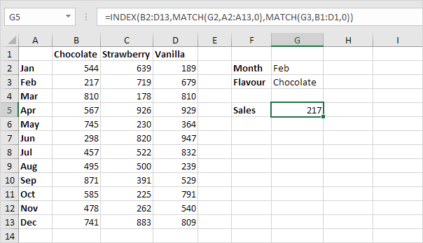
Pencarian peka huruf besar/kecil
Secara default, fungsi VLOOKUP melakukan pencarian case-insensitive. Namun, Anda dapat menggunakan INDEX, MATCH, dan EXACT di Excel untuk melakukan pencarian peka huruf besar/kecil .

Catatan: rumus benar mencari gaji MIA Reed, bukan Mia Clark.
Pencarian Kiri
Fungsi VLOOKUP hanya melihat ke kanan. Jangan khawatir, Anda dapat menggunakan INDEX dan MATCH di Excel untuk melakukan pencarian kiri .
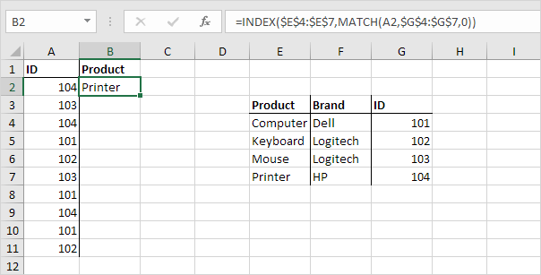
Catatan: ketika kita menyeret rumus ini ke bawah, referensi absolut ($E$4:$E$7 dan $G$4:$G$7) tetap sama, sedangkan referensi relatif (A2) berubah menjadi A3, A4, A5, dll.
Pencarian dua kolom
Apakah Anda ingin mencari nilai berdasarkan beberapa kriteria? Gunakan INDEX dan MATCH di Excel untuk melakukan pencarian dua kolom .
Catatan: rumus array di atas mencari gaji James Clark, bukan James Smith, bukan James Anderson.
Pertandingan Terdekat
Untuk menemukan kecocokan terdekat dengan nilai target di kolom data, gunakan INDEX, MATCH, ABS, dan MIN di Excel.
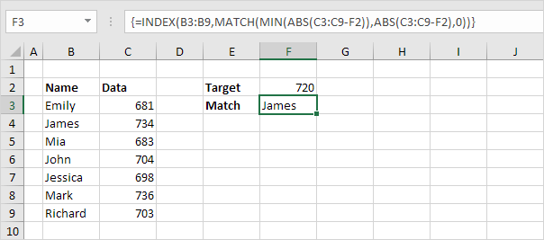
Pencarian dua arah (Two-way Lookup)
Untuk mencari nilai dalam rentang dua dimensi , gunakan INDEX dan MATCH di Excel . Di bawah ini Anda dapat menemukan penjualan berbagai rasa es krim di setiap bulannya.
1. Untuk mencari posisi Feb pada range A2:A13, gunakan fungsi MATCH. Hasilnya adalah 2.

2. Untuk mencari posisi Cokelat pada range B1:D1, gunakan fungsi MATCH. Hasilnya adalah 1.
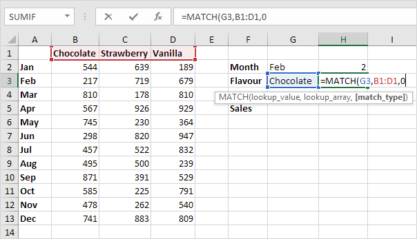
3. Gunakan hasil ini dan fungsi INDEX untuk mencari penjualan Cokelat di bulan Februari.
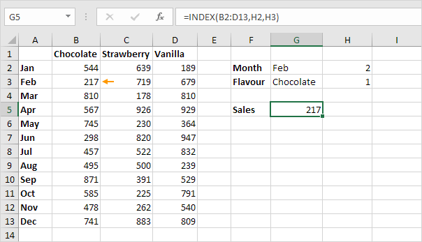
Penjelasan: 217 ditemukan pada perpotongan baris 2 dan kolom 1 pada rentang B2:D13.
4. Gabungkan semuanya.
Anda juga dapat mencari nilai dalam rentang dua dimensi tanpa menggunakan INDEX dan MATCH. Trik berikut ini cukup mengagumkan.
5. Pilih rentang A1:D13.

6. Pada tab Rumus, di grup Nama yang Ditentukan, klik Buat dari Pilihan.

7. Centang Baris atas dan kolom Kiri dan klik OK.

8. Excel membuat 12 + 3 = 15 rentang bernama! Cukup pilih rentang dan lihat kotak Nama.

9. Gunakan operator intersect (spasi) untuk mengembalikan perpotongan dua rentang bernama.

10. Buat pencarian dua arah yang dinamis.

Penjelasan: fungsi INDIRECT mengonversi string teks ("Feb" di sel G2 dan "Cokelat" di sel G3) menjadi rentang bernama yang valid.
Offset
Fungsi OFFSET di Excel mengembalikan sel atau rentang sel yang merupakan jumlah baris dan kolom tertentu dari sel atau rentang sel.
1. Fungsi OFFSET di bawah ini mengembalikan sel yaitu 3 baris di bawah dan 2 kolom di sebelah kanan sel A2. Fungsi OFFSET mengembalikan sel karena tinggi dan lebar keduanya disetel ke 1.

Hasil:
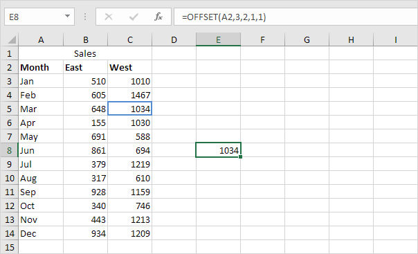
2. Fungsi OFFSET di bawah ini mengembalikan rentang 1 x 2 yaitu 8 baris di bawah dan 1 kolom di sebelah kanan sel A2. Fungsi SUM menghitung jumlah rentang ini.
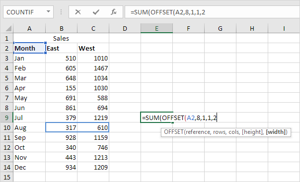
Hasil:

2 argumen terakhir dari fungsi OFFSET adalah opsional. Ketika tinggi dan lebar dihilangkan, referensi baru memiliki tinggi dan lebar yang sama dengan referensi awal (argumen pertama). Seperti biasa, kami akan menggunakan contoh mudah untuk membuat segalanya lebih jelas.
3. Fungsi OFFSET di bawah ini mengembalikan sel yaitu 12 baris di bawah dan 0 kolom di sebelah kanan sel A2.
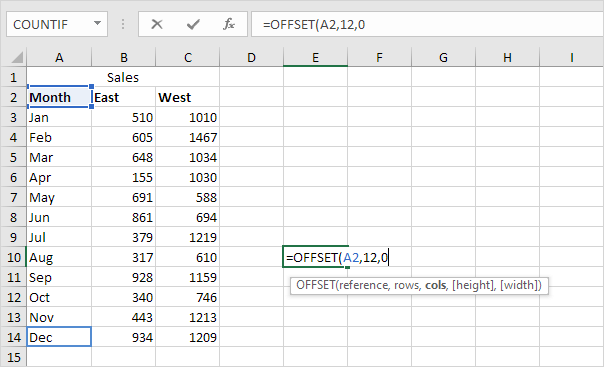
Hasil:
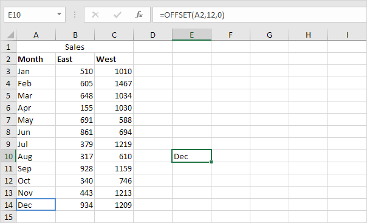
4. Fungsi OFFSET di bawah ini mengembalikan rentang yaitu 4 baris di bawah dan 0 kolom di sebelah kanan rentang B2:C2. Fungsi SUM menghitung jumlah rentang ini.

Hasil:
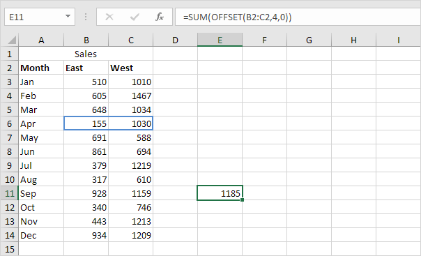
Catatan: untuk mengembalikan rentang (tanpa menghitung jumlah), pilih rentang dengan ukuran yang sama sebelum Anda menyisipkan fungsi OFFSET dan selesaikan dengan menekan Ctrl+Shift+Enter. Jika Anda ingin mengembalikan sel atau rentang sel yang merupakan jumlah baris tertentu di atas atau kolom di sebelah kiri, masukkan angka negatif.
Pencarian Case-Insensitive
Secara default, fungsi VLOOKUP melakukan pencarian case-insensitive. Namun, Anda dapat menggunakan INDEX, MATCH, dan EXACT di Excel untuk melakukan pencarian peka huruf besar/kecil .
1. Misalnya, fungsi VLOOKUP sederhana di bawah ini mengembalikan gaji Mia Clark. Namun, kami ingin mencari gaji MIA Reed (lihat sel G2).
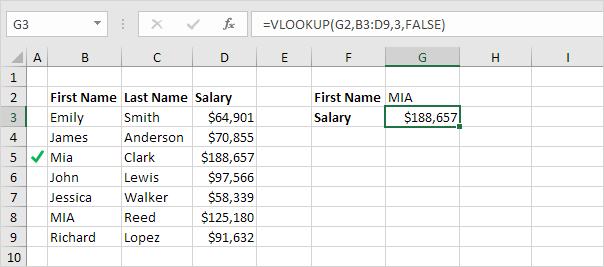
2. Fungsi EXACT di Excel mengembalikan TRUE jika dua string sama persis. Fungsi EXACT di bawah ini mengembalikan FALSE.

3. Fungsi EXACT di bawah ini mengembalikan TRUE.

4. Ganti B8 dengan B3:B9.
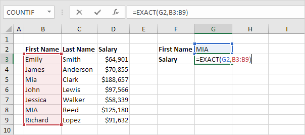
Penjelasan: Rentang (konstanta array) yang dibuat oleh fungsi EXACT disimpan dalam memori Excel, bukan dalam rentang. Konstanta array terlihat sebagai berikut:
{SALAH; SALAH; SALAH; SALAH; SALAH; BENAR; SALAH}
5. Yang kita butuhkan hanyalah sebuah fungsi yang menemukan posisi TRUE dalam konstanta array ini. MATCH berfungsi untuk menyelamatkan! Akhiri dengan menekan Ctrl+Shift+Enter.
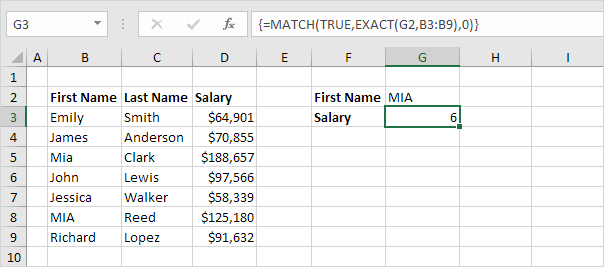
Penjelasan: TRUE (argumen pertama) ditemukan pada posisi 6 dalam konstanta array (argumen kedua). Dalam contoh ini, kami menggunakan fungsi MATCH untuk mengembalikan kecocokan persis sehingga kami menyetel argumen ketiga ke 0. Bilah rumus menunjukkan bahwa ini adalah rumus larik dengan mengapitnya dalam kurung kurawal {}. Jangan mengetik ini sendiri.
6. Gunakan fungsi INDEX (dua argumen) untuk mengembalikan nilai tertentu dalam rentang satu dimensi. Dalam contoh ini, gaji pada posisi 6 (argumen kedua) dalam kisaran D3:D9 (argumen pertama).

7. Akhiri dengan menekan Ctrl+Shift+Enter.
Catatan: rumus benar mencari gaji MIA Reed, bukan Mia Clark. Bilah rumus menunjukkan bahwa ini adalah rumus larik dengan mengapitnya dalam kurung kurawal {}.
Left Lookup
Fungsi VLOOKUP hanya melihat ke kanan. Untuk mencari nilai di kolom mana pun dan mengembalikan nilai yang sesuai ke kiri , cukup gunakan INDEX dan MATCH .
1. Fungsi MATCH mengembalikan posisi nilai dalam rentang tertentu.

Penjelasan: 104 ditemukan pada posisi 4 di kisaran $G$4:$G$7.
2. Gunakan hasil ini dan fungsi INDEX untuk mengembalikan nilai ke-4 dalam rentang $E$4:$E$7.
3. Seret rumus di sel B2 ke bawah ke sel B11.

Catatan: ketika kita menyeret rumus ini ke bawah, referensi absolut ($E$4:$E$7 dan $G$4:$G$7) tetap sama, sedangkan referensi relatif (A2) berubah menjadi A3, A4, A5, dll.
Temukan Nilai Maksimum (Locate Maximum Value)
Contoh ini mengajarkan Anda cara menemukan alamat sel dari nilai maksimum dalam kolom.
1. Pertama, kita menggunakan fungsi MAX untuk mencari nilai maksimum di kolom A.
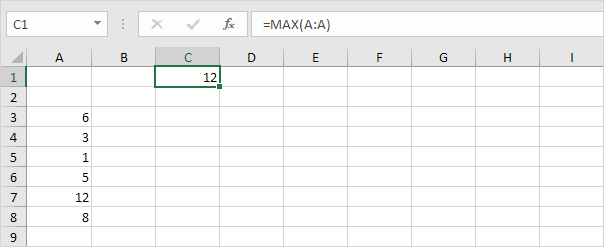
2. Kedua, kita menggunakan fungsi MATCH untuk mencari nomor baris dari nilai maksimum.

Penjelasan: fungsi MATCH direduksi menjadi =MATCH(12,A:A,0), 7. Fungsi MATCH mengembalikan posisi nilai maksimum di kolom A. Setel argumen ketiga ke 0 untuk mengembalikan kecocokan persis.
3. Terakhir, kita menggunakan fungsi ADDRESS untuk mengembalikan alamat sel.

Penjelasan: fungsi ADDRESS direduksi menjadi =ADDRESS(7,1), $A$7. Argumen pertama menentukan nomor baris. Argumen kedua menentukan nomor kolom.
Indirect
Referensi Sel | Referensi Rentang | Rentang Bernama | Referensi Lembar Kerja
Gunakan fungsi INDIRECT di Excel untuk mengonversi string teks menjadi referensi yang valid. Anda dapat menggunakan operator & untuk membuat string teks.
Referensi Sel
Gunakan fungsi INDIRECT di Excel untuk mengonversi string teks menjadi referensi sel yang valid.
1. Sebagai contoh, perhatikan fungsi INDIRECT di bawah ini.

Penjelasan: =INDIRECT(A1) direduksi menjadi =INDIRECT("D1"). Fungsi INDIRECT mengubah string teks "D1" menjadi referensi sel yang valid. Dengan kata lain, =INDIRECT("D1") direduksi menjadi =D1.
2. Fungsi INDIRECT sederhana di bawah ini menghasilkan hasil yang sama persis.
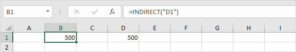
3. Apakah kita benar-benar membutuhkan fungsi INDIRECT? Ya. Tanpa menggunakan fungsi INDIRECT, inilah hasilnya.
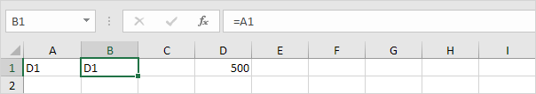
4. Gunakan operator & untuk menggabungkan string "D" dengan nilai di sel A1.
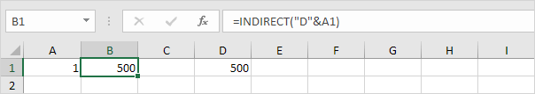
Penjelasan: rumus di atas direduksi menjadi =INDIRECT("D1"). Sekali lagi, =INDIRECT("D1") direduksi menjadi =D1.
Referensi Rentang
Gunakan fungsi INDIRECT di Excel untuk mengonversi string teks menjadi referensi rentang yang valid. Misalnya, gunakan SUM dan INDIRECT.

Penjelasan: rumus di atas direduksi menjadi =SUM(INDIRECT("D3:D6")). Fungsi INDIRECT mengubah string teks "D3:D6" menjadi referensi rentang yang valid. Dengan kata lain, =SUM(INDIRECT("D3:D6")) dikurangi menjadi =SUM(D3:D6).
Rentang bernama
Gunakan fungsi INDIRECT di Excel untuk mengonversi string teks menjadi rentang bernama yang valid.
1. Misalnya, fungsi AVERAGE di bawah ini menggunakan Skor rentang bernama.

Penjelasan: rentang bernama Skor mengacu pada rentang D1:D3.
2. Namun, fungsi AVERAGE di bawah ini mengembalikan kesalahan.
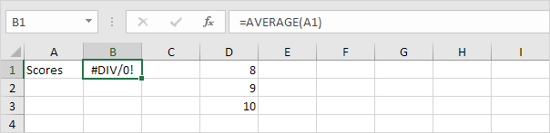
Penjelasan: =AVERAGE("Skor") mengembalikan kesalahan karena Excel tidak dapat menghitung rata-rata string teks!
3. Fungsi INDIRECT di bawah ini berhasil.

Penjelasan: =AVERAGE(INDIRECT("Scores")) dikurangi menjadi =AVERAGE(Scores).
Referensi Lembar Kerja
Gunakan fungsi INDIRECT di Excel untuk membuat referensi lembar kerja dinamis.
1. Seperti inilah referensi lembar kerja sederhana.

Catatan: sel A1 pada Sheet1 berisi nilai 10. Sel A1 pada Sheet2 berisi nilai 20. Sel A1 pada Sheet3 berisi nilai 30.
2. Pada lembar Ringkasan, masukkan fungsi INDIRECT yang ditunjukkan di bawah ini. Gunakan operator & untuk menggabungkan nama sheet di sel A1 dengan "!A1".
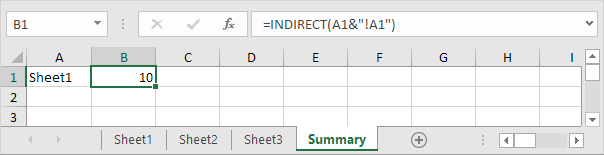
Penjelasan: rumus di atas direduksi menjadi =INDIRECT("Sheet1!A1"). Fungsi INDIRECT mengubah string teks "Sheet1!A1" menjadi referensi lembar kerja yang valid. Dengan kata lain, =INDIRECT("Sheet1!A1") direduksi menjadi =Sheet1!A1.
3. Jika nama sheet Anda mengandung spasi atau karakter khusus lainnya, lampirkan nama sheet dalam tanda kutip tunggal. Ubah fungsi INDIRECT seperti yang ditunjukkan di bawah ini.
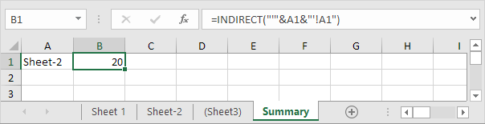
Pencarian dua kolom (Two-column Lookup)
Pencarian dua kolom
Contoh ini mengajarkan Anda cara melakukan pencarian dua kolom di Excel . Lihat contoh di bawah ini. Kami ingin melihat gaji James Clark, bukan James Smith, bukan James Anderson.
1. Untuk menggabungkan string, gunakan operator &.

2. Fungsi MATCH mengembalikan posisi nilai dalam rentang tertentu. Masukkan fungsi MATCH yang ditunjukkan di bawah ini.
3. Selesai dengan menekan Ctrl+Shift+Enter.
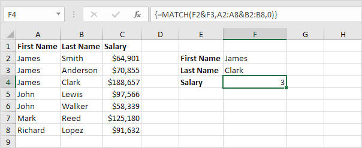
Catatan: Bilah rumus menunjukkan bahwa ini adalah rumus larik dengan mengapitnya dalam kurung kurawal {}. Jangan mengetik ini sendiri. Mereka akan hilang saat Anda mengedit rumus.
Penjelasan: Rentang (konstanta array) A2:A8&B2:B8 disimpan dalam memori Excel, bukan dalam rentang. Konstanta array terlihat sebagai berikut:
{"JamesSmith";"JamesAnderson";"JamesClark";"JohnLewis";"JohnWalker";"MarkReed";"RichardLopez"}
Konstanta array ini digunakan sebagai argumen untuk fungsi MATCH, memberikan hasil 3 (JamesClark ditemukan di posisi 3).
4. Gunakan hasil ini dan fungsi INDEX untuk mengembalikan nilai ke-3 dalam rentang C2:C8.
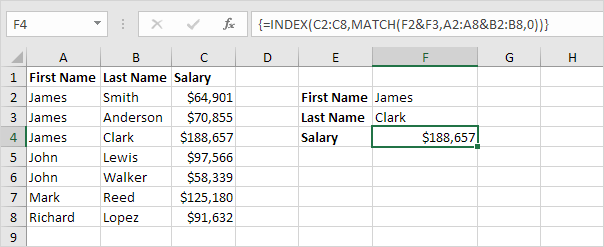
Closest Match
Untuk menemukan kecocokan terdekat dengan nilai target di kolom data, gunakan INDEX, MATCH, ABS, dan MIN di Excel . Gunakan fungsi VLOOKUP di Excel untuk menemukan kecocokan perkiraan.
1. Fungsi ABS di Excel mengembalikan nilai mutlak sebuah angka.
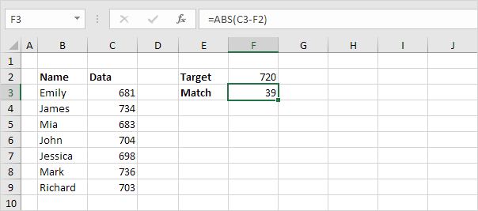
Penjelasan: C3-F2 sama dengan -39. Fungsi ABS menghilangkan tanda minus (-) dari angka negatif, menjadikannya positif. Fungsi ABS tidak berpengaruh pada angka 0 (nol) atau positif.
2. Untuk menghitung selisih antara nilai target dan nilai pada kolom data, ganti C3 dengan C3:C9.
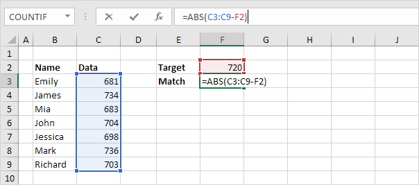
Penjelasan: rentang (konstanta array) yang dibuat oleh fungsi ABS disimpan dalam memori Excel, bukan dalam rentang. Konstanta array terlihat sebagai berikut:
{39;14;37;16;22;16;17}
3. Untuk menemukan kecocokan terdekat , tambahkan fungsi MIN dan selesaikan dengan menekan Ctrl+Shift+Enter.
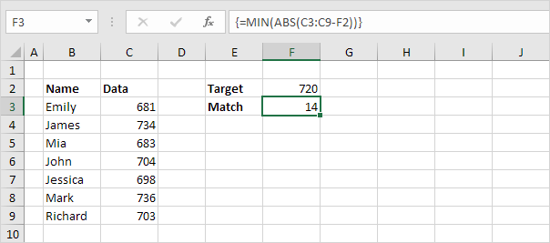
Catatan: bilah rumus menunjukkan bahwa ini adalah rumus larik dengan mengapitnya dalam kurung kurawal {}. Jangan mengetik ini sendiri. Konstanta array digunakan sebagai argumen untuk fungsi MIN, memberikan hasil 14.
4. Yang kita butuhkan hanyalah sebuah fungsi yang menemukan posisi nilai 14 dalam konstanta array. MATCH berfungsi untuk menyelamatkan! Akhiri dengan menekan Ctrl+Shift+Enter.
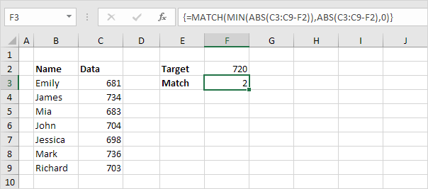
Penjelasan: 14 (argumen pertama) ditemukan pada posisi 2 dalam konstanta array (argumen kedua). Dalam contoh ini, kami menggunakan fungsi MATCH untuk mengembalikan kecocokan persis sehingga kami menetapkan argumen ketiga ke 0.
5. Gunakan fungsi INDEX (dua argumen) untuk mengembalikan nilai tertentu dalam rentang satu dimensi. Dalam contoh ini, nama pada posisi 2 (argumen kedua) dalam rentang B3:B9 (argumen pertama).
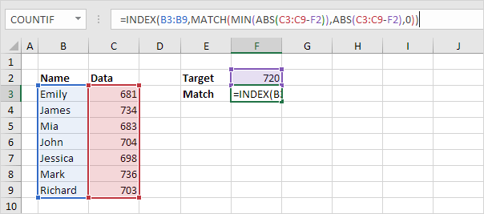
6. Akhiri dengan menekan Ctrl+Shift+Enter.
Bandingkan Dua Kolom (Compare Two Columns)
Tampilkan Duplikat | Nilai Unik di Setiap Kolom | Perbandingan Baris demi Baris
Untuk membandingkan dua kolom, gunakan IF, ISERROR dan MATCH di Excel. Anda dapat menampilkan duplikat atau nilai unik.
Sebelum kita mulai: apakah Anda ingin membandingkan dua kolom dengan menyorot nilai unik di setiap kolom? Kunjungi halaman kami tentang membandingkan dua daftar .
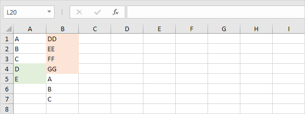
Tampilkan Duplikat
Mari kita mulai dengan membandingkan dua kolom dan menampilkan duplikatnya.
1. Tampilkan duplikat di kolom pertama (nilai ini juga muncul di kolom kedua).

Penjelasan: fungsi MATCH di sel C1 mengembalikan angka 5 (huruf A ditemukan di posisi 5 dalam rentang B1:B7). Akibatnya, fungsi ISERROR mengembalikan FALSE dan fungsi IF mengembalikan nilai di sel A1. Fungsi MATCH di sel C4 mengembalikan kesalahan #N/A (tidak ada huruf D dalam rentang B1:B7). Akibatnya, fungsi ISERROR mengembalikan TRUE dan fungsi IF mengembalikan string kosong.
2. Anda juga dapat menampilkan duplikat di kolom kedua.

Catatan: pada langkah 1, kami mencocokkan setiap nilai di kolom pertama dengan rentang di kolom kedua. Pada langkah 2, kami mencocokkan setiap nilai di kolom kedua dengan rentang di kolom pertama.
Nilai Unik di Setiap Kolom
Apakah Anda ingin membandingkan dua kolom dengan menampilkan nilai unik di setiap kolom? Cukup tukar 2 argumen terakhir dari fungsi IF.
1. Tampilkan nilai unik di kolom pertama (nilai ini tidak muncul di kolom kedua).

Catatan: lihat gambar kedua di halaman ini untuk melihat bahwa kita menukar 2 argumen terakhir dari fungsi IF.
2. Anda juga dapat menampilkan nilai unik di kolom kedua.
Catatan: lihat gambar ketiga di halaman ini untuk melihat bahwa kita menukar 2 argumen terakhir dari fungsi IF.
Perbandingan Baris demi Baris
Untuk perbandingan baris demi baris dengan cepat, cukup gunakan fungsi IF di Excel.
1. Fungsi IF di sel C1 di bawah ini mengembalikan Match karena nilai di sel A1 sama dengan nilai di sel B1.

2. Untuk melakukan perbandingan peka huruf besar/kecil, tambahkan fungsi EXACT.

3. Apakah Anda ingin membandingkan dua kolom dengan menyorot perbedaan di setiap baris? Kunjungi halaman kami tentang Perbedaan Baris.

Xlookup
Pencocokan Tepat | Tidak Ditemukan | Perkiraan Pertandingan | Pencarian Kiri | Beberapa Nilai
Jika Anda memiliki Excel 365, gunakan XLOOKUP alih-alih VLOOKUP . Fungsi XLOOKUP lebih mudah digunakan dan memiliki beberapa keuntungan tambahan.
Benar-benar cocok
Secara default, fungsi XLOOKUP di Excel 365 melakukan pencocokan persis.
1. Fungsi XLOOKUP di bawah ini mencari nilai 53 (argumen pertama) dalam rentang B3:B9 (argumen kedua).
2. Selanjutnya, itu hanya mengembalikan nilai di baris yang sama dari rentang E3:E9 (argumen ketiga).
3. Ini contoh lain. Alih-alih mengembalikan gaji, fungsi XLOOKUP di bawah ini mengembalikan nama belakang (ganti E3:E9 dengan D3:D9) dari ID 79.
Tidak ditemukan
Jika fungsi XLOOKUP tidak dapat menemukan kecocokan, ia mengembalikan kesalahan #N/A.
1. Misalnya, fungsi XLOOKUP di bawah ini tidak dapat menemukan nilai 28 dalam rentang B3:B9.

2. Gunakan argumen keempat dari fungsi XLOOKUP untuk mengganti kesalahan #N/A dengan pesan ramah.

Perkiraan Pertandingan
Mari kita lihat contoh fungsi XLOOKUP dalam mode pencocokan perkiraan.
1. Fungsi XLOOKUP di bawah ini mencari nilai 85 (argumen pertama) dalam rentang B3:B7 (argumen kedua). Hanya ada satu masalah. Tidak ada nilai 85 dalam kisaran ini.
2. Untungnya, nilai -1 (argumen kelima) memberitahu fungsi XLOOKUP untuk menemukan nilai berikutnya yang lebih kecil. Dalam contoh ini, nilai 80.

3. Selanjutnya, itu hanya mengembalikan nilai di baris yang sama dari rentang C3:C7 (argumen ketiga).

Catatan: gunakan 1 alih-alih -1 untuk argumen kelima untuk menemukan nilai berikutnya yang lebih besar. Dalam contoh ini, nilai 90. Fungsi XLOOKUP juga bekerja dengan data yang tidak disortir. Dalam contoh ini, tidak perlu mengurutkan skor dalam urutan menaik.
Pencarian Kiri
Daripada menggunakan INDEX dan MATCH di Excel untuk melakukan pencarian kiri , cukup gunakan fungsi XLOOKUP. Misalnya, lihat fungsi XLOOKUP di bawah ini.
Penjelasan: fungsi XLOOKUP mencari nama belakang dan mengembalikan ID.
Beberapa Nilai
Fungsi XLOOKUP di Excel 365 dapat mengembalikan beberapa nilai.
1. Pertama, fungsi XLOOKUP di bawah ini mencari ID dan mengembalikan nama depan (tidak ada yang baru).
2. Ganti C6:C12 dengan C6:E12 untuk mengembalikan nama depan, nama belakang, dan gaji.
Catatan: fungsi XLOOKUP , dimasukkan ke dalam sel C3, mengisi beberapa sel. Wow! Perilaku ini di Excel 365 disebut menumpahkan.